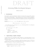

Obtaining the source code
The most recent release of the Local Language Toolkit as of SCiL 2019 is version 0.01a, available as a gzipped tarball, or via SVN:
svn checkout https://lutras-hacking.ddns.net/svn/Language-Toolkit-2/tags/0.01a
You can also checkout the latest development snapshot, with the caveat that the documentation provided here may not necessarily apply to future versions of the software:
svn checkout https://lutras-hacking.ddns.net/svn/Language-Toolkit-2/trunk
If you take the latter approach, you may want to obtain updated documentation and example files:
svn checkout https://lutras-hacking.ddns.net/svn/Language-Toolkit-2/branches/docs
svn checkout https://lutras-hacking.ddns.net/svn/Language-Toolkit-2/branches/examples plebFiles
svn checkout https://lutras-hacking.ddns.net/svn/Language-Toolkit-2/branches/examples plebFiles
All of the source files are written as Literate Haskell files in Bird style. Some of them can be compiled as LaTeX documents after being preprocessed with lhs2TeX. That said, PDF versions are available here because some of the packages used have not yet been publicly released.
- 
- ExtractSP